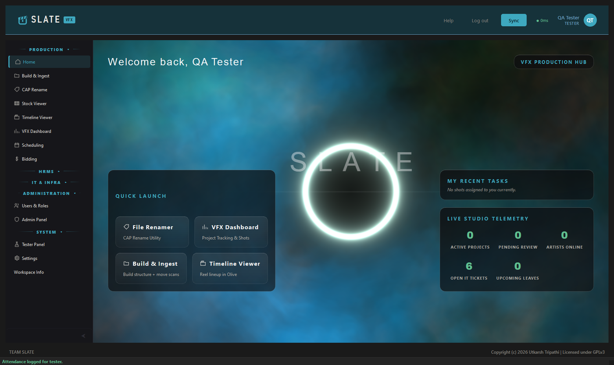
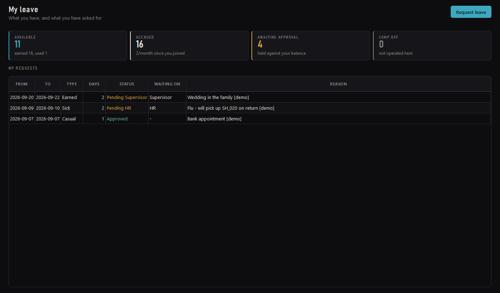
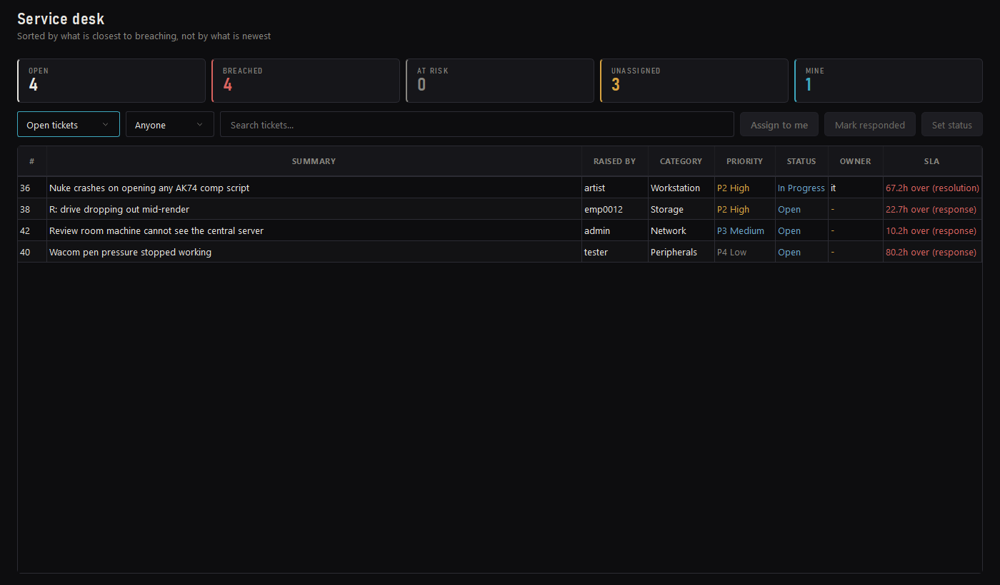
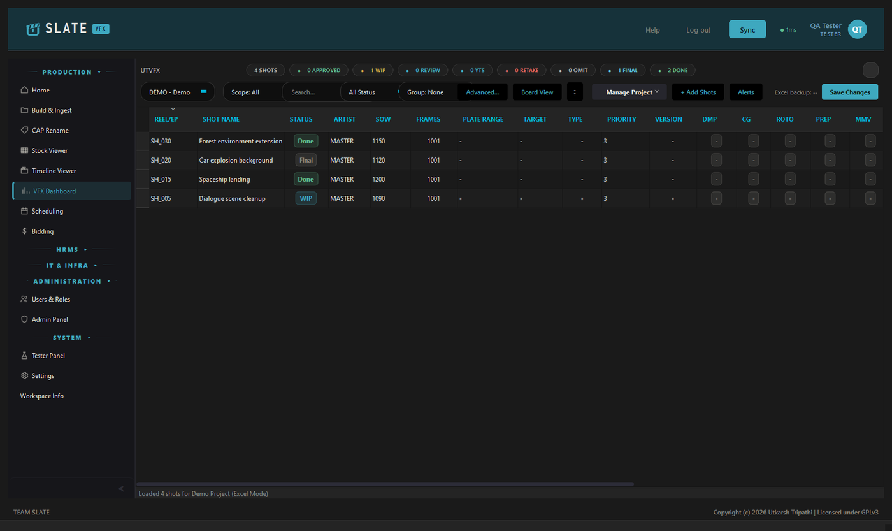
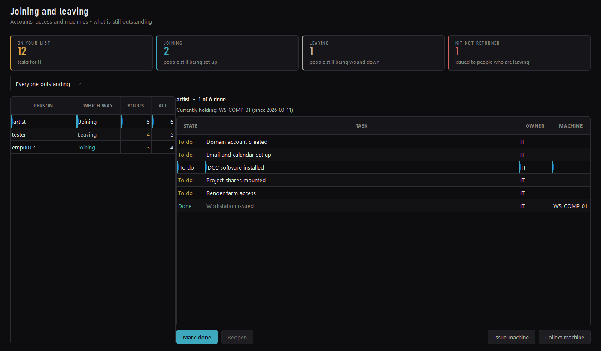
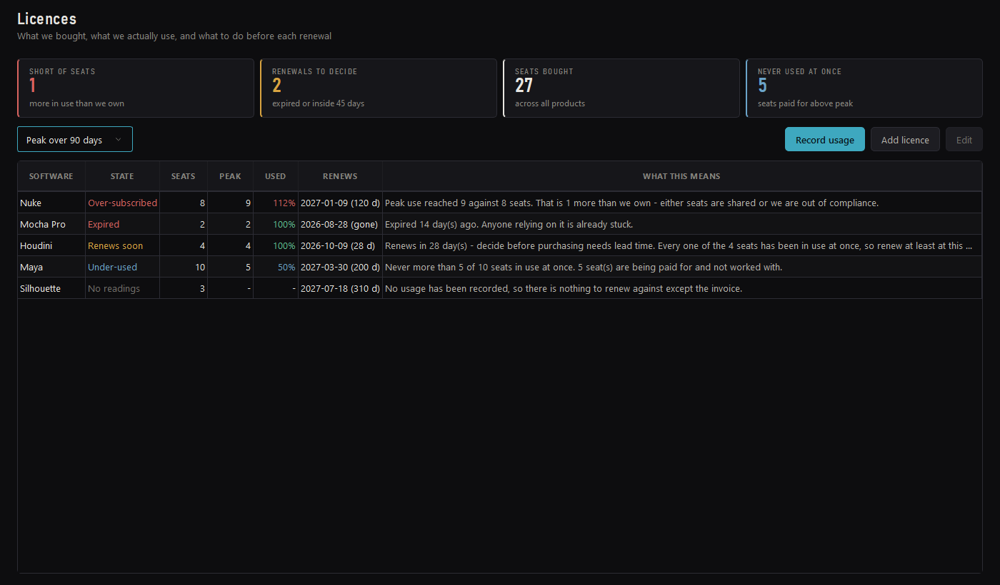

Build & Ingest
Lay down a shot structure from a template and move scans into it.
Studio pipeline · Windows desktop · GPLv3
Shots, plates, reels and reviews — and the part most pipeline tools leave to a spreadsheet: leave, attendance, the IT queue, the machines, the licences, and who is joining or leaving this week.

The idea it is built around
No mode switch, no permission toast, no screen you cannot act on. One entry in the sidebar opens two entirely different screens depending on who opened it — and for the third module, the entry simply is not there.
An artist
HR, or a supervisor
An artist
HR and IT
What is in it
Production
Lay down a shot structure from a template and move scans into it.
Batch rename, search and replace, sequence serialising. Understands an image sequence as one item rather than 1,200 files.
The studio's stock library — thumbnails, tags, and a search that reaches into metadata.
Reel lineup, cut in Olive.
Shots, statuses, artists and departments — backed by the database, or by an Excel sheet where a show still runs that way.
Who is on what, and what a job should cost.
People
Accrual by completed month, a six-day week, a holiday calendar, and a sandwich rule that is explained rather than just applied. Supervisor, then HR.
Punch in and out. Comp-off is earned from that record rather than typed in by hand — never credited twice, and a shift across midnight counts.
One checklist read in two directions, split between the team that owns each half.
IT
Priority derived from impact and urgency through an ITIL grid — nobody picks P1, so the queue stays honest. Response and resolution clocks.
The fleet, and who is holding what.
Seats bought against peak concurrent use, so a renewal is decided on evidence.




The joining spine
Onboarding and offboarding are not two lists. They are one list, read forwards and backwards — which is the only reason offboarding can be systematic rather than approximate. For a studio that cycles freelancers per project, that is where the money is: machines that never came back, and seats nobody released.
Joining
Leaving
The machine is on the row. Issuing a workstation writes the assignment, updates the fleet, ticks the checklist line and stamps the machine name against it. When that person leaves, the leaving list already knows what to ask for — nobody has to remember.
Licence compliance
Two questions a seat count cannot answer, and both cost money in opposite directions. The honest measure of a floating licence is peak concurrent use — twenty artists and eight Nuke seats is fine if never more than eight are comping at once. Slate keeps that reading so the renewal conversation is held with evidence instead of instinct.
Peak reached 9 against 8 seats. This is the one that ends in an audit letter, so it outranks even an expiry.
Gone 14 days ago. Anyone relying on it is already stuck.
Inside 45 days. Decide before purchasing needs lead time.
Never more than 5 of 10 in use at once. Five seats paid for and not worked with.
Bought, never measured. Nothing to renew against except the invoice.

Getting it running
setup.bat.
That is the whole install. Nothing goes into the registry or onto PATH,
no Python already on the machine is touched, and deleting the folder removes it.
Downloads a portable Python, FFmpeg and the rest, and installs the dependencies. Running it twice is safe — anything already in place is skipped, and an interrupted download resumes rather than leaving a half file behind.
Where the studio database is, and the password. Written to a local file that git never sees. Leave the password blank and Slate runs on a local SQLite database instead — everything works, nothing is shared.
Setup writes three launchers: the client, the operations shell, and Central Server.
setup.bat install what is missing setup.bat /check say what it would do, download nothing setup.bat /server also install PostgreSQL (server machine only) setup.bat /force re-download even what is already there
No passwords in this repository. It is public, so the shipped config carries settings only — the real values are written by setup into a git-ignored local file and never leave the machine.